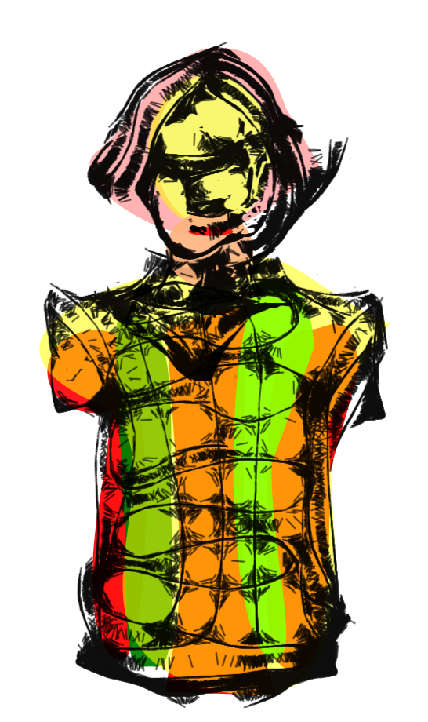
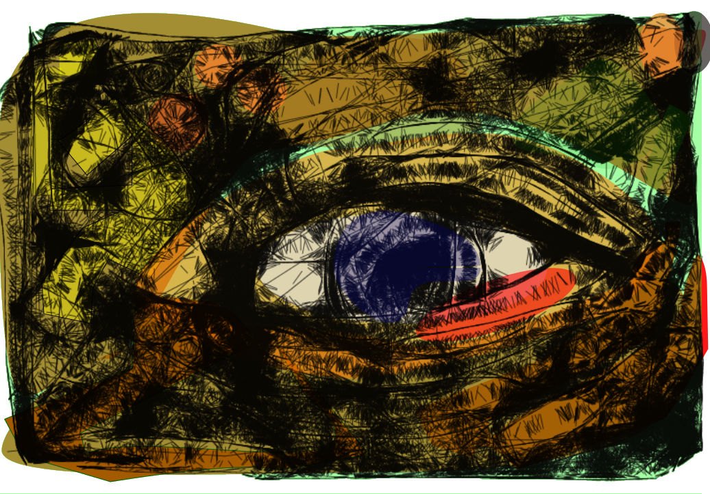

Hernani Dimantas está desenvolvendo alguns projetos de artes, aplicando a gambiarra para linguagem estética.
Estou envolvido numa série de pinturas em óleo sobre tela. É a continuidade de um projeto que comecei a fazer com guache sobre papel. Penso em usar outras técnicas como impressão em alta definição.
Recentemente, junto com Glauco Paiva fizeram uma bicicleta geradora de energia e uma intervenção com estruturas mobiles de lixo eletrônico na Casa Mario Quintana, em Porto Alegre. Hd, compartilhou algumas imagens e um pouco da proposta de seu trabalho atual:
Um projeto que tenho feito é 'A descontrução do HD'. Uma série de peças produzidos com materiais que encontro dentro de um hard disk. A exemplo das esculturas impermanentes moldadas com imãs, da coluna dediscos feita com os discos HD, como também, das estruturas com tampase do corpos do HD, colados, pintados. Ou, não. Tenho experimentado a manipulação de imagens disponíveis na rede. A exemplo de imagens de efeitos sobre localizações no google earth. Imagens a partir do Textorizer e do Excoffizer, um programa que mistura texto e efeitos nas imagens. E, desenhos que tenho feito a partir de aplicativos de celulares. Fiz alguns tratamentos desses desenhos no GIMP e Inkskape. São esses os desenhos que apresento aqui no MutSaz.

